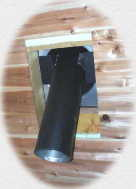
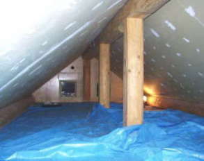
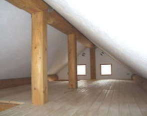
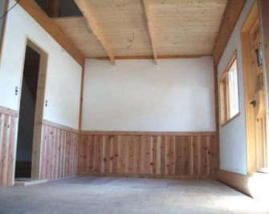
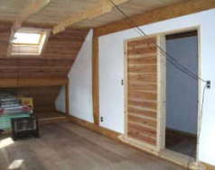
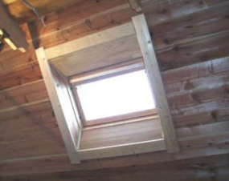
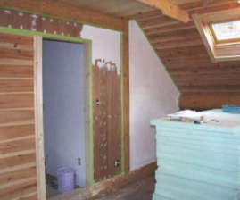
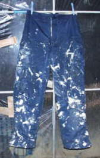

２０００． ３月
２０００． ３月 |
 |
２階とロフトの天井、及び壁の仕上げ
下地処理から、仕上げ塗りまでかなりの手間がかかった。
やはりパテ埋めとマスキングの良し悪しが仕上がりを左右する。
|  ロフトは、12ｍｍの石膏ボードを貼り パテで継ぎ目と、ビスのところを埋めている |
 仕上がり |
|  東側の寝室 |
 西側寝室 |
|  天窓周りの仕上げ |
 |
|  | 下地がコンパネの場合、パテ埋め後 下地処理として、アクドメールを２度塗り、 シーラを１度ぬる。 そしてやっと仕上げの塗りとなる。 ズボンはジョリパットだらけ |